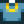

Joyería élfica
Ir a la navegación
Ir a la búsqueda
| Joyería élfica | |
| Sucia pero aún hermosa. En un lado hay una escritura fluida que algunos creen que es la lengua de los elfos. Jamás se han encontrado huesos élficos. | |
| Información | |
| Lugares de artefactos: | Bosque Tizón (0.8%) |
| Botín de monstruos: | n/d |
| Otras fuentes: | |
| Precio de venta: | |
La joyería élfica es un artefacto que puede encontrarse arando con una azada en un lugar de artefacto que se encuentre en el bosque tizón, pescando un cofre del tesoro o en los cofres artefactos.
Donación
Donando este objeto contribuyes al total de las donaciones del museo.
Regalos
| Reacciones de Aldeanos
| |
|---|---|
| Le gusta | |
| No le gusta | |
Sastrería
La joyería élfica se puede usar en el carrete de la Máquina de coser para crear la Camiseta con joyas.  Se puede usar en la Tintura, sirviendo como tinte de color amarillo en los tarros de tinta, en la casa de Emily y Haley, Camino del Sauce, 2.
Misiones
La joyería élfica no se usa en ninguna misión.
Historial
- 1.0: Introducido.
- 1.4: Se ha añadido en los cofres artefactos como fuente. Ahora se puede usar en la sastrería.
- 1.5: Los Artefactos ahora les gusta al Enano y a Penny, y no le gusta a todos los demás NPCs.